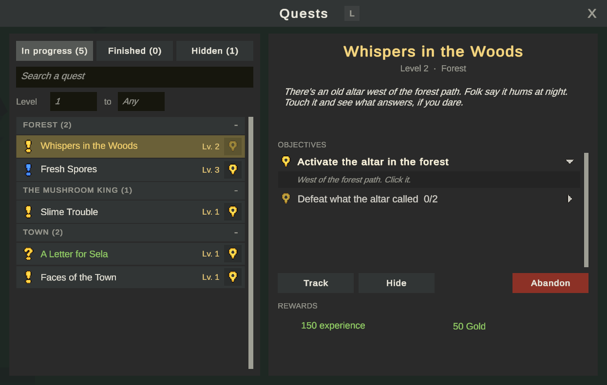
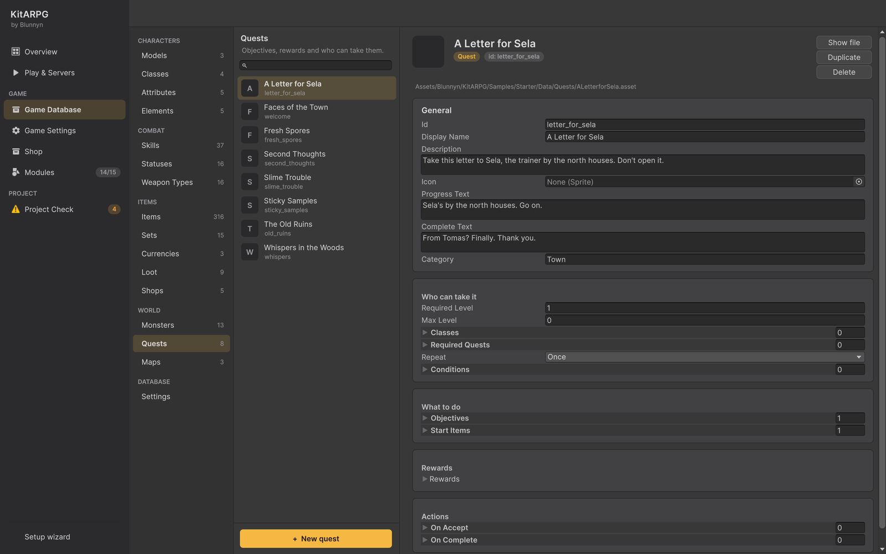

任务
任务是 NPC 发布的工作：完成目标，然后在玩家交付时获得奖励。本页介绍任务的每个字段、每种目标、任务如何发放和交付、任务链、每日任务和可重复任务、任务掉落、任务日志，以及分步制作一个带每日任务的任务链。
任务是什么

任务是 Game Database 中的一个 QuestData 资源。它说明：
- 谁可以接取（等级、职业、之前的任务、任何其他条件），
- 要做什么（目标：击杀、收集、交谈、探索、触发），
- 它给予什么（经验、金币、货币、物品、点数、技能），
- 接取和交付时会发生什么（动作），
- 是否可以再次完成（一次、每日、始终）。
NPC 通过 Quest 选项发放并收回它。发布者和接收者可以是不同的 NPC。服务器计算每个目标并发放奖励；客户端只发出请求。
任务是一个模块：在 Modules 中关闭 Quests 会隐藏所有 Quest 选项。
在编辑器中的位置

Game Database > World > Quests。+ New quest 在数据库旁的 Quests 文件夹中创建一个任务，并把它加入数据库的 quests 列表。你也可以使用 Create > KitARPG > Quest。
目标、条件和动作的列表在每个条目旁都有一个类型菜单，因此添加时你可以选择 Kill、Collect 等。
字段
Texts
| 字段 | 作用 | 默认值 |
|---|---|---|
Id（id） |
随角色保存。修改它会丢失所有人在该任务上的进度。 | 来自文件名 |
Display Name（displayName） |
任务的标题。 | 空（资源名称） |
Description（description） |
发布者发放任务时说的话。也显示在任务日志中。 | 空 |
Progress Text（progressText） |
任务尚未完成时发布者说的话。 | "Not done yet? Come back when it is." |
Complete Text（completeText） |
交付任务时发布者说的话。 | "Well done." |
Category（category） |
在任务日志中把它分组，例如按地区或故事线。留空则归入 General。 | 空 |
Who can take it
| 字段 | 作用 | 默认值 |
|---|---|---|
Required Level（requiredLevel） |
最低等级。 | 1 |
Max Level（maxLevel） |
最高等级。0 表示不限。 | 0 |
Classes（classes） |
可以接取的职业。留空表示任何职业。 | 空 |
Required Quests（requiredQuests） |
必须先交付的任务：一条任务链。 | 空 |
Repeat（repeat） |
Once、Daily 或 Always。 | Once |
Conditions（conditions） |
玩家还必须满足的其他条件：携带某物品、发现某地点、某个剧情标记。参见条件与动作。 | 空 |
What to do
| 字段 | 作用 | 默认值 |
|---|---|---|
Objectives（objectives） |
任务内容。全部完成才能交付。 | 空 |
Start Items（startItems） |
接取时交给玩家，例如一封要送的信。放弃任务时收回。 | 空 |
Rewards
| 字段 | 作用 | 默认值 |
|---|---|---|
Experience（experience） |
经验。玩家的 Experience Gain 数值和服务器的经验倍率适用。 | 0 |
Gold（gold） |
金币。 | 0 |
Currencies（currencies） |
其他货币，各带数量。 | 空 |
Items（items） |
物品，各带数量。背包放不下的进入仓库。 | 空 |
Attribute Points（attributePoints） |
可分配的属性点。 | 0 |
Skill Points（skillPoints） |
可分配的技能点。 | 0 |
Skill（skill） |
像书一样传授：技能的学习规则仍然适用。如果玩家无法学习，则跳过。 | None |
Skill Rank（skillRank） |
传授的等级。 | 1 |
Actions
| 字段 | 作用 | 默认值 |
|---|---|---|
On Accept（onAccept） |
接取时运行。如果有一项无法运行（例如玩家付不起的费用），任务不会被接取。 | 空 |
On Complete（onComplete） |
交付时、在奖励之前运行：设置剧情标记、收取额外物品。如果有一项无法运行，任务不会被交付。 | 空 |
列表中的每个动作都会在任何动作运行之前被检查，因此列表永远不会只运行一半。参见条件与动作。
目标
每个目标有两个共同字段：
| 字段 | 作用 | 默认值 |
|---|---|---|
Text（text） |
在任务日志中显示。留空则使用默认文字，例如 "Slay Slimes"。 | 空 |
Hint（hint） |
在任务日志中目标下方展开：问谁、去哪里找。 | 空 |
当目标需要多于一个时，日志会显示计数，例如 "Slay Slimes 3/6"。每前进一步都会在玩家头顶提示，最后一个完成时显示 "<quest>: ready to turn in"。
Kill
击杀某种怪物，或任意怪物。
| 字段 | 作用 | 默认值 |
|---|---|---|
Monster（monster） |
怪物。留空则计入任意怪物。 | None |
Count（count） |
数量。 | 5 |
默认文字："Slay <monster>" 或 "Slay monsters"。击杀计入获得击杀的玩家，以及附近有同一任务的队友。召唤物不计入。
Collect
携带一定数量的某物品。计算的是背包当前的数量，可增可减：出售或丢弃物品会降低计数。
| 字段 | 作用 | 默认值 |
|---|---|---|
Item（item） |
物品。 | None |
Count（count） |
数量。 | 5 |
Take On Turn In（takeOnTurnIn） |
交付任务时发布者收走它们。 | On |
默认文字："Bring <item>"。仓库中的物品不计入。把它与任务掉落结合，使物品只在任务进行中掉落。
Count 为 1 的收集目标加上一个 Start Item 就构成一个送信任务：示例中的 "A Letter for Sela" 交给玩家一封封好的信，并要求在 Sela 处交回，文字为 "Give the letter to Sela"。
Talk
按 NPC 在地图上的 id 与其交谈。
| 字段 | 作用 | 默认值 |
|---|---|---|
Npc Id（npcId） |
NPC 的 id，没有 id 时为其对象的名称。 | 空 |
Npc Name（npcName） |
日志中对它的称呼。 | 空 |
默认文字："Talk to <name>"。在任务已接取的情况下，玩家开始与该 NPC 交谈时计数。
Explore
到达某个地方：地图上的一个点及其周围半径，或一个探索区域。
| 字段 | 作用 | 默认值 |
|---|---|---|
Map（map） |
该点所在的地图。留空：任意地图。 | None |
Zone（zone） |
区域的 id：走进该 DiscoveryZone 即算到达。设置后取代点。 |
空 |
Position（position） |
该点。 | 0, 0, 0 |
Radius（radius） |
点周围地面上的米数。 | 5 |
Place Name（placeName） |
日志中对它的称呼，例如 "the old ruins"。 | 空 |
默认文字："Find <place>"。服务器每半秒检查一次。区域是更简单的选择：放置一次 DiscoveryZone，这个目标和条件都可以使用它的 id。参见条件与动作。
Trigger
触发一个世界触发器：触碰祭坛、拉动拉杆、走进标记的地点。
| 字段 | 作用 | 默认值 |
|---|---|---|
Trigger（trigger） |
其地图上触发器的 id。 | 空 |
Count（count） |
次数。 | 1 |
Target Name（targetName） |
日志中对它的称呼，例如 "the altar"。 | 空 |
默认文字："Activate <target>"。任何在满足其条件时触发该触发器的玩家都会计数，即使对所有人生效的触发器已经用掉了。参见世界触发器。
任务状态
对每个角色而言，任务处于以下状态之一：
| 状态 | 含义 |
|---|---|
| Locked | 未满足要求，或已完成且尚不可重复。 |
| Available | 现在可以接取。 |
| Active | 已接取，目标未完成。 |
| Ready | 所有目标都已完成；等待交付。 |
| Done | 已交付，不会再开放。 |
发放与交付
在发放它的 NPC 和收回它的 NPC 上放置 Quest 选项。参见 NPC。
- 只有在有事可做时选项才会显示。其标签说明玩家的进度：可接时为黄色 "!"，可交付时为黄色 "?" 和 "(complete)"，未完成时为灰色 "?" 和 "(in progress)"。
- NPC 头顶通过
NpcQuestMarker显示同样的标记。 - 选择该选项会打开任务窗口：NPC 的文字（描述、进行中文字或完成文字）、目标、奖励，以及接取或交付的按钮。按 Escape 或玩家走开时关闭。
接取
服务器按顺序检查：
- 任务为 Available。否则回答第一个未满足的要求，例如 "Needs level 3" 或 "Finish Slime Trouble first"。
- 玩家进行中的任务少于 20 个（玩家
PlayerQuests组件上的 Max Active）。否则："Too many quests open"。 - 背包有空间放初始物品。否则："Make room in your bag or bank first"。
- On Accept 动作都能运行。
然后它交出初始物品，开启任务，立即按背包计算收集目标，并显示 "New quest: <name>"。新任务会在 HUD 上被追踪。
交付
- 每个目标都必须完成。
- 奖励必须放得下：交出的物品会先腾出其格子，背包放不下的进入仓库。如果两者都没有空间："Make room in your bag or bank first"。
- 运行 On Complete 动作。
- 开启了 Take On Turn In 的收集目标收走其物品。
- 发放奖励：物品（先背包，后仓库）、金币、货币、点数、技能、经验。
- "Quest complete: <name>"。
放弃
在任务日志中，Abandon（需要确认）放弃任务。其初始物品会被收回，要么全部收回要么不收回：如果背包中缺少一些，会告诉玩家先把它们放回去。这样可以防止玩家重新接取任务以获得第二份物品。
把初始物品标记为任务物品（开启 Quest Item 并绑定）。Project Check 会对不是任务物品的初始物品发出警告：它可能被交易或出售，之后任务就无法放弃。
任务链、每日任务和可重复任务
- 任务链： 在 Required Quests 中列出之前的任务。在它们交付之前，下一个任务保持 Locked。要更精细地控制，在 Conditions 中使用
QuestCondition，例如 "仅当任务 X 进行中时"。 - 每日： Repeat 为 Daily。交付后，它在第二天再次开放，按 UTC 计算（UTC 午夜，而不是玩家的本地时间）。
- 始终： Repeat 为 Always。交付后立即再次开放。
- 一次： 默认值。永久完成。
任务掉落
掉落表中设置了 Quest 字段的掉落，只为正在进行该任务、且携带的该物品数量仍少于收集目标要求的击杀者掉落。幸运和掉落倍率不会改变它的几率。把任务掉落放在表的最前面，这样 Max Drops 永远不会截掉它们。
任务日志和追踪器
- 任务日志（
L）：In progress、Finished 和 Hidden 标签页及其计数，按名称或分类搜索，以及等级范围。任务按 Category 分组，组可以折叠。每一行显示其类型（一次、每日、可重复或可交付）、等级以及用于追踪的图钉。页面显示标题、等级、类型、分类和状态、描述、带计数和提示的目标（第一个未完成的会突出显示）、奖励，以及 Track、Hide 和 Abandon 按钮。 - 追踪器： 被追踪的任务及其目标显示在 HUD 右侧，最多 5 个（
QuestTracker上的 Max Quests）。隐藏任务也会停止追踪它。追踪和隐藏状态随角色保存。
参见 HUD 与窗口。
制作带每日任务的任务链
以下步骤在一位队长处制作一条三个任务的任务链，并在一位炼金术士处制作一个每日任务，与示例类似。
1. 第一个任务：击杀任务
- Quests > + New quest。把它重命名为 Slime Trouble。
- Description："Slimes keep oozing out of the forest toward the gate. Thin them out."。Progress Text："Still hearing them squelch out there."。Complete Text："That's quieter. Here, you earned these."。
- Category：
The Mushroom King。 - Required Level 1。
- Objectives：添加 Kill。Monster Slime，Count 6，Hint "Out the town gate and into the forest."。
- Rewards：Experience 80，Gold 30，Items Health Potion x3。
2. 第二个任务：带任务掉落的收集任务
- 在 Items > Quest items 中制作一个物品 Slime Gel（任务物品并绑定）。
- 新任务 Sticky Samples。Required Quests：Slime Trouble。Required Level 2。
- Objectives：Collect，Item Slime Gel，Count 5，开启 Take On Turn In，Hint "Slimes drop it while this quest is open."。
- 打开 Items > Loot > Slime Loot。在顶部添加一个掉落：Item Slime Gel，Chance % 60，数量 1 和 1，Quest Sticky Samples。
- Rewards：Experience 120，Gold 40，以及一个物品。
3. 第三个任务：探索与击杀
- 在 Forest 场景中，在遗迹上添加一个
DiscoveryZone：Zone Idold_ruins，Display Name "Old Forest Ruins"，Radius 8。 - 新任务 The Old Ruins。Required Quests：Sticky Samples。
- Objectives：Explore，Map Forest，Zone
old_ruins，Place Name "the old ruins in the forest"。然后 Kill，Monster Giant Slime，Count 1。
4. 把任务链交给队长
- 在队长的
Npc上，按三次 Add option 下的 Quest，每个选项选择一个任务。 - 一次只显示一个：上一个交付后，下一个变为 Available。
- 可选：一句带条件的问候语，使用一个针对 The Old Ruins、设为 Taken 的
QuestCondition："Back from the ruins already?"。参见 NPC。
5. 每日任务
- 制作一个任务物品 Glowing Spore，并把它作为任务掉落加入蘑菇的掉落表，Quest 设为新任务。
- 新任务 Fresh Spores。Repeat 为 Daily。Required Level 3。Category
Forest。 - Objectives：Collect Glowing Spore，Count 4。
- Rewards：Experience 60，Gold 50，Fortitude Elixir x2。
- 在炼金术士上为它添加一个 Quest 选项。
6. 测试
按 Play。有用的 GM 命令：/quest give slime_trouble、/quest finish slime_trouble（完成每个目标）、/quest reset fresh_spores（遗忘该任务，这样每日任务可以立即再次接取）、/spawn slime 6。参见 GM 命令。
保存
- MMO： 进度和已交付任务的记录由 Central 保存在角色的额外数据中（键
quests和questsDone），无需数据库迁移。 - 单人模式： 保存在玩家电脑上的角色存档中。
- 如果你以后修改任务的目标，仍然匹配的目标上的进度会保留。
单人模式和 MMO
两种模式下规则相同。在 MMO 中，地图服务器计算击杀、交谈、地点和物品，并根据附近带有该选项的 NPC 验证接取和交付。任务进度会随角色在地图服务器之间移动。
给程序员
继承 QuestObjective 来添加你自己的类型（例如 "制作 3 瓶药水"），并用 PlayerQuests.ServerAdvance<T>(match, amount) 推进它。PlayerQuests.ServerCompleted 在任务交付时通知其他系统。QuestData.CheckRequirements 是虚方法。参见任务目标和事件。
常见错误
- 任务从不出现在 NPC 上。 某个要求不满足（等级、职业、之前的任务、条件），它已 Done 且不可重复，Quest 选项的 Offers 关闭了，或 Quests 模块已关闭。
- 收集计数下降。 玩家出售、丢弃或存放了物品。收集按背包的当前状态计算。
- 任务物品不掉落。 掉落的 Quest 不是正在进行的任务，玩家已经拥有足够数量，或其上方的掉落填满了 Max Drops。
- 交谈目标没有计数。 Npc Id 与 NPC 的 id 不匹配，或玩家在接取任务之前就交谈了。
- 每日任务在奇怪的时间重新开放。 它在 UTC 午夜重新开放。